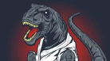
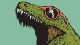
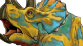
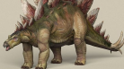
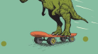

-

Tyrannosaurus rex
Tyrannosaurus was a bipedal carnivore with a massive skull balanced by a long, heavy tail.
-

Allosaurus
Allosaurus was a large bipedal predator for its time. Its skull was light, robust, and equipped with dozens of sharp, serrated teeth.
-

Diplodocus
Diplodocus is among the most easily identifiable dinosaurs, with its typical sauropod shape, long neck and tail, and four sturdy legs.
-

Tricerators
Bearing a large bony frill, three horns on the skull, and a large, four-legged body, exhibiting convergent evolution with bovines and rhinoceroses, Triceratops is one of the most recognizable of all dinosaurs and the most well-known ceratopsian.
-

Stegosaurus
They were large, heavily built, herbivorous quadrupeds with rounded backs, short fore limbs, long hind limbs, and tails held high in the air.
-

/Velociraptor
Velociraptor (commonly referred to as "raptor") is one of the dinosaur genera most familiar to the general public due to its prominent role in the Jurassic Park films.